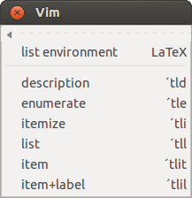
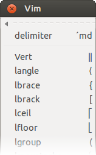
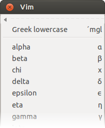
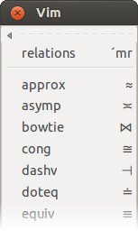
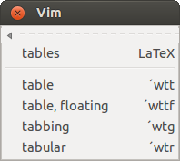
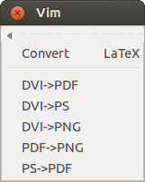

Menu Comments : insert comments
A lot of the menu entries are defined in a so-called template library. The library defines the menu entries, maps and the inserted text. The personal information can also be configured there.
A file prolog is automatically inserted into each new file (can be switched off):
%%=====================================================================================
%%
%% Filename: somedoc.tex
%%
%% Description:
%%
%% Version: 1.0
%% Created: 29.02.2015
%% Revision: none
%%
%% Author: Wolfgang Mehner (WM), <thisguy@doggymail.de>
%% Organization:
%% Copyright: Copyright (c) 2015, Wolfgang Mehner
%%
%% Notes:
%%
%%=====================================================================================
This prolog is generated from the template shown below. This template file can easily be changed by the user.
Tags (like |FILENAME|) are replaced when the template is inserted.
== Comments.file prolog == noindent, start, map:cp, sc:p == %%===================================================================================== %% %% Filename: |FILENAME| %% %% Description: <CURSOR> %% %% Version: 1.0 %% Created: |DATE| %% Revision: none %% %% Author: |AUTHOR| (|AUTHORREF|), |EMAIL| %% Organization: |ORGANIZATION| %% Copyright: |COPYRIGHT| %% %% Notes: %% %%===================================================================================== == ENDTEMPLATE ==
Menu Text : insert text-oriented items |
 |
Menu Math : insert frequently used math-related statements
  Menu Snippets : insert code snippets and manage templates
The plug-in comes with a facility to extract, manage and insert often used code snippets. Visually select a few lines and use the menu entry write code snippet to write these lines into a file. The code snippet can then be edited and inserted again using read code snippet.
(See :help latexsupport-snippets)
The templates which define the behavior of most of the menu entries are also manage here. Use templates setup wizard to create a personalization file with your personal details for the comments.
The templates support different coding styles. Use the entry choose style to switch between them.
Menu Wizard : code generation wizardsUse the menu entry table ➞ tabular or the map \wtr and enter the number of rows and columns (e.g. 3 and 2) to insert a skeleton for a table: %%----- TABULAR : begin ---------- \begin{tabular}[]{p{60mm}p{60mm}} \hline | & \\ \hline & \\ & \\ \hline \end{tabular}\\ %%----- TABULAR : end ---------- |
 |
Menu Run : call typesetter, view document, check document, ...Run the typesetter or check or syntax. In case of errors the quickfix window will open to show the list of errors. |
 quickfix window after running the typesetter  convert the generated documents |
Menu Help : call help
Help is quickly accessible through the Help menu. Place the cursor on the name of a package or LaTeX command, such as hyperref, ...
\usepackage[ps2pdf]{hyperref}
then use the entry textdoc or the map \ht. Then the plug-in will execute $texdoc hyperref and open the documentation in a browser or PDF viewer.
The same works for any word in the English language. Placing the cursor on a word and hitting \he opens a dictionary for the word.